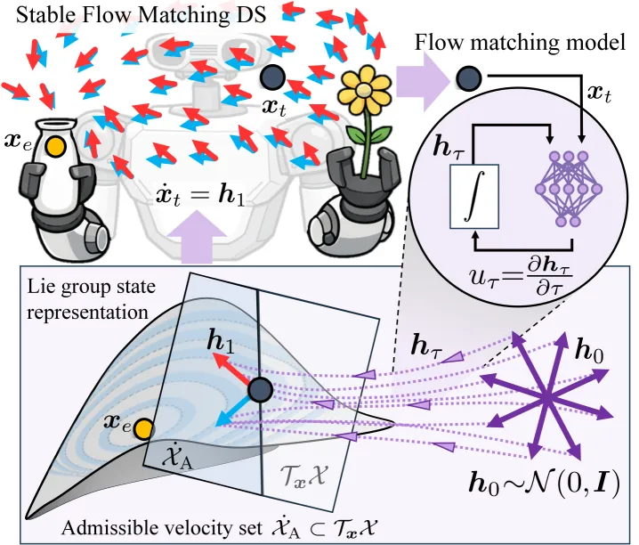
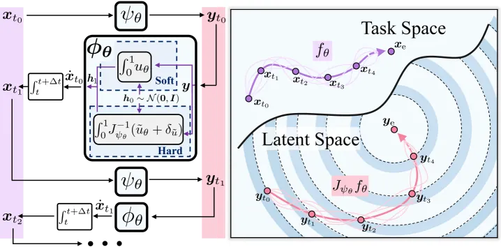
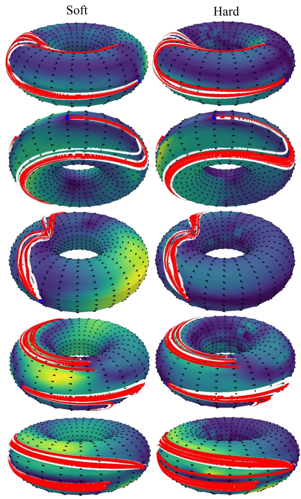
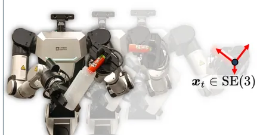
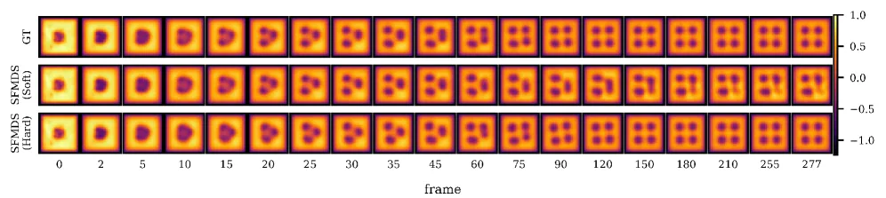

Flow matching 用于模仿学习时表达力强、可扩展、能建模多模态动作，但缺乏机器人策略所需的形式化稳定性保证。SFMDS 用 flow matching 隐式建模机器人运动的向量场，同时把学到的速度约束在由正不变性 / Lyapunov 渐近稳定性推导出的可行集内，做到“stable by design”。提供 soft（惩罚项）与 hard（结构性硬约束、构造上全局稳定）两种变体，并推广到 SE(3) 等 Lie 群。
Flow matching 策略在模仿学习中能高效学到复杂的多模态动作分布，性能优于经典 behavior cloning。但它并非为运动生成与控制设计，缺乏机器人策略所需的严格安全性保证。另一方面，把机器人运动建模为“学习驱动的动力系统 (dynamical systems)”能提供稳定性保证（正不变性、渐近收敛到目标），但已有方法往往只能建模单模态、表达力有限，或依赖 diffeomorphism（可逆神经网络 RealNVP/normalizing flow），以牺牲架构灵活性为代价换取 stable-by-design。
“…incorporating formal stability guarantees into these generative models is a prerequisite to ensure safe and generalizable robot behaviors, which remains a significant challenge.” — SFMDS 正是要在“高表达力生成模型”与“形式化稳定性保证”之间架桥。

目标是学一个时不变自治动力系统 ẋ_t = f_θ(x_t)（式 1），并要求 f_θ 属于满足预定稳定行为的可行函数族 𝓕_A。SFMDS 不显式参数化动力学，而是用 flow matching 隐式建模：对每个状态 x_t，从 h₀∼𝒩(0,𝐈) 出发、沿辅助时间 τ∈[0,1] 积分一个状态条件、时不变的 flow matching 向量场 u_θ(z_τ; x_t)，把终点 h₁ 当作速度 ẋ_t（式 19）。稳定性则通过把 u_θ 的输出约束到 admissible velocity set Ẋ_A 来实现——该集合由 LaSalle's invariance principle 从两类稳定性质推导：positive invariance 与 asymptotic stability。

把“速度落在可行半空间”这一条件写成 hinge-type loss（式 34：ℓ_PI = σ_r(−δ_h⊤u_θ + m_u)），作为正则项加到 imitation learning 损失上，训练时在状态/速度空间均匀采样施加。实现简单、不限制网络架构，但只提供局部（local）稳定性保证。渐近稳定性通过在潜在空间 𝓛 构造 Lyapunov 候选 V^𝓛=d(y_e,y_t)²，并把潜在动力学约束到 Ĺ_A 内（式 44）来强制。
把网络原始输出 ũ_θ 通过 ReLU 投影（式 29/45）直接投影到 admissible half-space，约束被“焊进”模型架构，因而构造上全局渐近稳定 (globally asymptotically stable)。代价是要求编码器 ψ_θ 为 diffeomorphism（用 NODE / Glow blocks 实现），且其 Jacobian J_{ψ_θ} 可逆——推理需额外的内层积分与 Jacobian 求逆（论文用 Taylor-series 近似加速）。
机器人策略常需同时控制位置与朝向，后者属于 SO(3)/𝕊³ 等非欧空间。SFMDS 借助 adjoint operator Ad_x⁻¹ 与 logarithmic map（约束在 first cover 内以避免 wrapping）把方法搬到 Lie 群（式 57），支持 SE(3) 位姿、𝕋²、SO(3)。论文还专门分析了 forward-Euler 离散化下的稳定性（用 ball 投影替代半空间投影），弥合连续时间保证与实际数值积分之间的差距。
在 6 类任务上评估：(1) LASA、(2) 新提出的 LASA 𝕋²、(3) 新提出的 Multimodal ℝ²、(4) 仿真 SE(3) 倒水任务、(5) 真实人形机器人 SE(3) 插入、(6) 1682 维 Gray–Scott reaction–diffusion 系统。指标含 accuracy（RMSE / DTWD / Fréchet / Chamfer distance）与 stability（从 out-of-distribution 初始点出发的不成功轨迹占比 % Unsuc.）。基线 BC_FMDS 是去掉稳定性约束、其余训练完全相同的无约束 flow matching 动力系统，用于凸显“无约束时缺乏稳定性”。
| 数据集 / 系统 | BC_FMDS（无约束） | SFMDS Soft | SFMDS Hard |
|---|---|---|---|
| LASA（ℝ²，Table I） | 40.163 | 0.000 | 0.000 |
| LASA 𝕋²（Table I） | 32.248 | 0.000 | 0.000 |
| Multimodal ℝ²（Table II） | 27.978 | 0.000 | 0.000 |
| SE(3) 倒水（Table II） | 21.355 | 0.038 | 0.000 |
| GSRD 1682-d（Table III） | 100.0 | 2.344 | 0.000 |
无约束 BC_FMDS 在各任务上都有大量轨迹发散（LASA 40%、高维系统 100%），而 SFMDS 两种变体几乎总能收敛：hard 变体做到 0%，soft 变体仅个别边缘情形（如 SE(3) <0.13%、1682-d 为 2.344%）不收敛。准确度方面，在单模态 LASA 上所有方法 RMSE 相近（约 2.1–2.9）；在 Multimodal ℝ² 上 soft SFMDS 的 CH(G,D)=1.402×10⁻³ 明显优于 BC_FMDS 的 3.271×10⁻³，说明稳定约束并未牺牲多模态拟合。



hard SFMDS 因需内层积分 + Jacobian 求逆而更慢：在 ℝ² 上 BC/Soft ≈341.78 Hz 而 Hard ≈17.14 Hz；即便在 1682 维系统上 hard 仍达 ≈13–14 Hz（Table IV），足以支撑多数机械臂操作任务。整体权衡是：soft 架构灵活、精度略高、但只保证局部稳定；hard 提供全局稳定性保证，代价是需可逆映射且推理更慢。
“many robotic tasks cannot be adequately described by a single goal pose”——SFMDS 目前把稳定性定义为收敛到一个平衡点 x_e；作者指出扩展到收敛于目标状态集合会显著提升适用性。
真实机器人实验中的失败“were caused by constraint violations such as imminent self-collisions”，工作空间限制与自碰撞不被 SFMDS 考虑；作者建议把物理约束直接纳入驱动末端运动的动力系统。
目前仅以机器人状态 x 作为条件；作者提出用图像、point clouds 等更丰富的条件可拓宽适用范围，并需研究此设定下的稳定性。
连续时间的渐近稳定性不会自动传递到 forward-Euler 离散系统；App A 指出仍可能出现少量因离散化导致的“逃逸 Ẋ_A”或振荡边缘情形（soft SE(3) <0.13%、hard <0.03%），需专门处理。
hard SFMDS 依赖可逆映射 ψ_θ（NODE/Glow），推理需内层积分与 Jacobian 求逆，速度较 soft/BC 低一个数量级（如 ℝ²：17 Hz vs 342 Hz），高维时仅约 13 Hz。